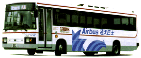
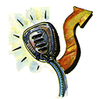
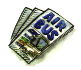
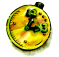
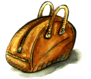
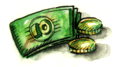

快 捷 舒 適 的 ' 通 天 巴 士 ' 路 線 ， 連 接 了 機 場 及 港 九 各 主 要 酒 店 ， 為 你 省 卻 昂 貴 的 過 海 隧 道 費 ， 亦 避 免 了 的 士 濫 收 車 費 的 情 形 。

廣 播 落 車 指 引
車 上 設 有 英 語 及 普 通 之 廣 播 ， 指 導 乘 客 在 適 當 的 巴 士 站 落 車 ， 往 其 所 往 的 酒 店 。

免 費 通 天 巴 士 路 線 圖 及 旅 遊 資 料
'為 方 便 旅 客 在 港 旅 及 乘 搭 通 天 巴 士 來 往 機 場 ， 車 上 更 備 有 通 天 巴 士 路 線 圖 及 各 種 旅 遊 資 料 予 遊 旅 客 免 費 取 閱 。

班 次 頻 密
各 條 通 天 巴 士 路 線 ， 由 早 上 7:00 至 12:00 ， 每 10 - 15 分 鐘 開 出 一 班 。 (A5, A7 除 外 － 由 早 上 8:00 至 晚 上 11:00 )

隨 身 行 李 ， 不 另 收 費
車 廂 內 特 設 闊 行 李 架 ， 乘 客 最 多 可 攜 帶 件 細 於 0.1/3 立 平 米 的 行 李 上 車 ， 不 另 收 費 。

票 價 廉 宜
通 天 巴 士 路 線 票 價 如 下 ：
| A1 | 港 幣 十 一 元 正 |
| A2, A3, A5, | 港 幣 十 六 元 正 |
| A7 | 港 幣 六 元 正 |
| 十 二 歲 以 下 小 童 半 價 優 惠 | - |